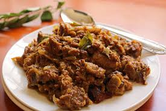

🍖 Mutton Sukka

Ingredients
- 500g mutton pieces (bone-in or boneless)
- 2 large onions, finely sliced
- 2 tomatoes, chopped
- 1 tbsp ginger-garlic paste
- 1 tsp turmeric powder
- 1 tsp red chili powder
- 1 tsp coriander powder
- 1/2 tsp garam masala
- 1 tbsp vinegar or tamarind pulp
- 2 tbsp oil
- Salt to taste
- Fresh coriander leaves for garnish
- 1/2 cup water (as needed)
Instructions
- Heat oil in a heavy pan and sauté onions until golden brown.
- Once the onions are golden, add ginger-garlic paste and sauté for 2 minutes.
- Add tomatoes, turmeric, red chili powder, and coriander powder. Cook until the tomatoes are soft and oil separates.
- Add mutton pieces and sear them for 5-7 minutes until browned on all sides.
- Pour in a little water, add vinegar (or tamarind pulp), and mix well. Cover and cook on low heat for 25-30 minutes until the mutton is tender.
- If the curry is too watery, cook on high heat until the gravy thickens. Stir frequently to avoid burning.
- Sprinkle garam masala and cook for an additional 5 minutes.
- Garnish with fresh coriander and serve hot.
Serve With
- Chapati, Naan, or Paratha
- Steamed Rice
- Onion salad
💡 Tip: For extra flavor, you can dry roast and grind a few spices (like cumin, coriander seeds, and black pepper) and add them to the dish.